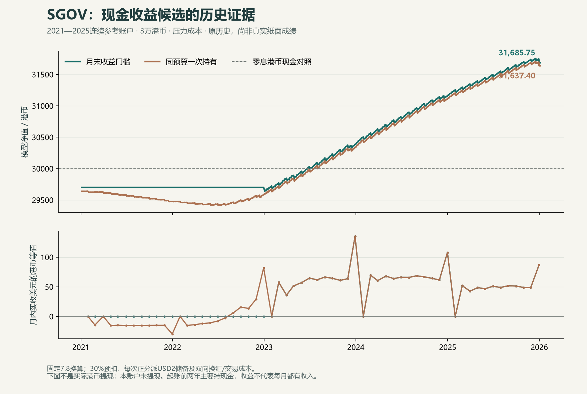
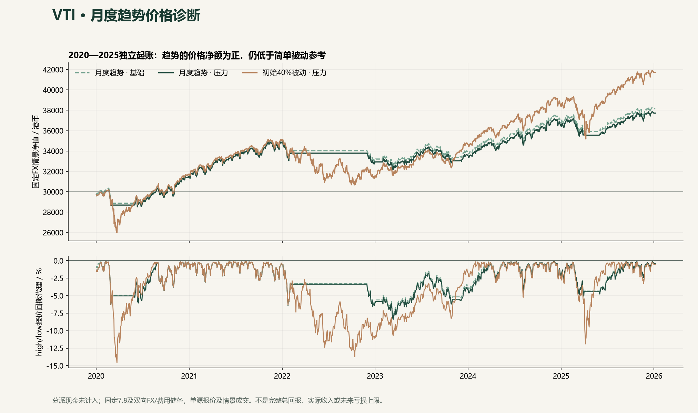
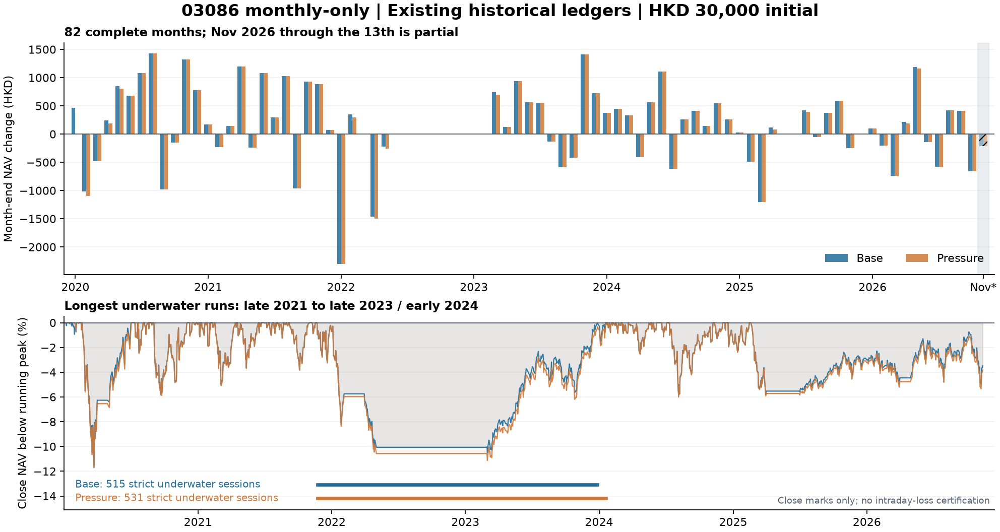
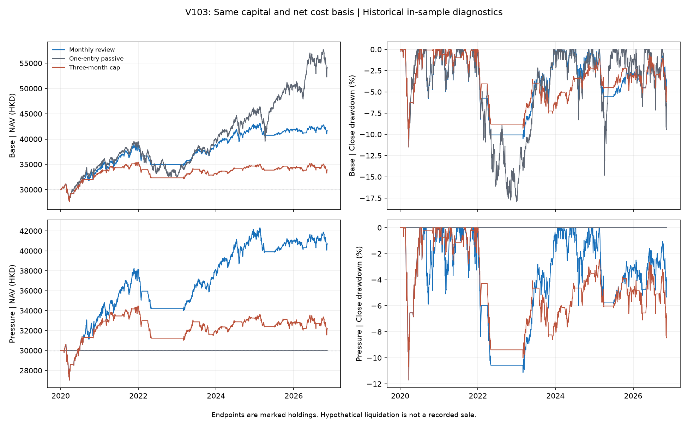

研究进展与证据
持续挖掘，逐项检验
港美个股及普通ETF：查看新因子结论、全部账户策略与当前分工；03086原四臂纸面继续独立跟踪。
正在读取同步时间
本轮焦点
阶段来自最近一次同步。快照超过15分钟后停止活动动画；刷新不会启动回测或交易。
本批新因子 · 有效性结论
查看旧因子目录历史与前向分别看
SGOV · 条件现金carry历史
3万压力：A 2021—2023 +324.32、B 2024—2025 +933.32、C 2021—2025 +1,685.75港币。2万／3万可继续固定纸面，1万不采用。

| 历史窗口 | 初始本金 | 基础净额 | 压力净额 | 压力报价回撤 | 资金适配 |
|---|
VTI · 普通美股ETF月度趋势价格诊断：3万、2020—2025独立起账，基础／压力净额约8,155／7,723港币；同初始40%被动持有更高。

分派现金未计入，固定7.8及双向汇兑成本不是真实汇率复原；单源报价与情景成交。2026年仅有结算尾部，没有新价格。不是完整总回报或稳定收入。
03152 · 现金管理条件基准：3万、2025季度进出净额517.81／338.43港币，全年一次747.78／702.93；1万季度压力仍亏64.47。

2024、2025分别起账不能相加；零分派及整手/价位连续是有界条件。减少进出改善了这些案例的净额，现金收益不是新增alpha或未来利率承诺。
03086 · 历史正额的时间分布：82完整月中，两档成本均有24负月。月净值变化中位122.65／90.67港币。

2020年至2026年10月为完整月，2026年11月截至13日为部分月。5笔闭合、1笔开放；净值变化含浮动估值和已计分派，没有提款计划。
IPO · 配售依赖压力：重费暖市净额中位，原独立抽签约+1,287，同月／全局共秩约−1,768／−2,238港币。

每只新股潜在获配边际计数不变，仅重排跨事件路径秩。两例不是现实相关估计或通用最坏界，模拟比例不是未来盈利概率。全部模型尾款在2026年10月27日结清。
02840 · 一万港币独立2026年起账，两成本净亏。连续2025年7月至2026年11月虽为正，固定条件仍未通过。

2026零分派为条件推断；回撤是观察报价代理。每案仅1个闭合回合，不是稳定副业或新盲测证明。
03195 · 固定2026后续段，两成本均未通过净正门槛。六个连续资金案及两个被动参考按协议未运行。

开发与后续段各自起账，收益不能相加。终点是持仓估值，没有假设成交卖单。

曲线属于已见历史。压力灰线为首次未买到后的现金，不能当作已投资市场的零收益；终点持仓按收盘标记。
03086 · 原T0四臂纸面
| 假设账户 | 当前标记权益 | 前向增减 | 持有份数 | 已闭合 |
|---|
SGOV · 新增固定纸面
| 假设账户 | 条件标记权益 | 模型权益增减 | 持有份数 | 已观察会话 |
|---|
这些假设账户的收益不相加为同一实投账户。系统不连接私人持仓，也不自动下单；没有新后台定时服务。
已验收与待验收
基础 / 压力成本分别列示研究记录
下载本次快照 ↓记录包含开发、来源核对和参考检验；同一策略的多个版本不增加独立样本。早期归档保留原结论日期，旧因子与本批新信号分别计数。